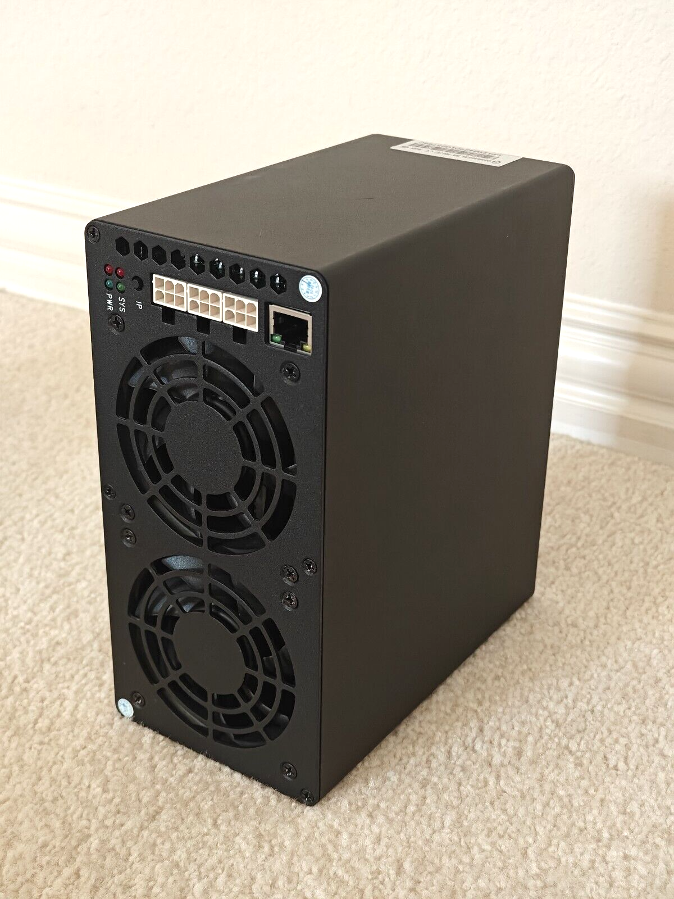

01
W For News in the Chat: October 10, 2026, 8 AM ET — Isaias Aftermath, Delhi Crackdown
Hurricane Isaias made landfall near Destin as a Category 2; Delhi detains hundreds ahead of a youth-party protest; Trump reacts to losing the Nobel Peace Prize.
Five weekday shows — a 7am Muse briefing, 10am AI news, 11am free AI tools, 12pm AI Money, 4pm everyday AI — plus hourly 5-minute news briefs from 8am to 8pm ET. Zero filler, all value.
Pick a series — new episodes land in their section the moment they drop.
Sage and Riot on the biggest stories of the hour — streamer energy, verified facts, zero filler.
Hurricane Isaias made landfall near Destin as a Category 2; Delhi detains hundreds ahead of a youth-party protest; Trump reacts to losing the Nobel Peace Prize.
Hurricane Isaias hours from Gulf Coast landfall as a Category Three; OpenAI fires three safety researchers over a 'breach of trust'; Mike Ditka dies at 86; and the internet roasts the Cowboys' Thursday night meltdown.
Isaias hours from a Pensacola landfall, Trump rallies for Blakeman in Syracuse with Mike Tyson in tow, Musk fights India over Starlink, and the internet audits A'ja Wilson's MVP speech.
Isaias hours from a Florida Panhandle landfall, Trump names a new press secretary, and the world pushes back on the ICC sanctions.
Isaias closes in on the Florida Panhandle ahead of landfall tonight; Trump hands the National Medal of Science to Musk, Brin, Huang and Su; Wall Street closes a winning week with the S&P near a record high; and cricket Twitter erupts over David Warner's greatest-keeper pick.
Hurricane Isaias closes in on the Florida Panhandle as Wall Street rallies and Nobel week names its last winners.
The US sanctions the International Criminal Court hours after Navi Pillay's Nobel win; Isaias nears landfall at Category 3; a new committee targets Fed Governor Lisa Cook; and the internet roasts the Cowboys.
Hurricane Isaias closes in on the Florida Panhandle with landfall hours away; midday market movers Delta, Humana, and Apple; Iran and the Houthis escalate in the Strait of Hormuz; plus Antonio Brown breaks the internet again.
Nobel Peace Prize backlash erupts, Texas Senate turns into a sick-note showdown, and Isaias is hours from landfall.
Wall Street rebounds Friday morning as the bull market turns four, the WMO warns of a record super El Niño, and Airtel Money lists in London at a billion valuation.
Trump says no Iran strikes before the midterms, consumer sentiment sinks toward a record low, Isaias bears down on Pensacola tonight, and Bollywood mourns Nana Patekar.
The Nobel Peace Prize goes to 85-year-old jurist Navi Pillay; Iran and the Houthis hit shipping and Riyadh airport as oil stays over 00; Wall Street bounces back after Thursday's OpenAI revenue scare.
Hurricane Isaias strengthens to Category 3 ahead of tonight's Gulf Coast landfall; SpaceX's eight-billion-dollar spectrum deal rattles telecom stocks; and the internet's debating the Colts owner's sideline.
Hurricane Isaias barrels toward the Gulf Coast, Manchester City is found guilty of 114 financial charges, Trump rallies in Syracuse, and NBA preseason breaks the internet's brain.
Isaias strengthens to a Category 2 with Friday-night landfall looming, Vance opens visa-fraud probes into nine universities and suspends Microsoft from the green-card program, Houthi attacks on Saudi targets escalate — and the internet mourns Nana Patekar.
GPT-6 goes free for everyone with interactive answers, the Lincoln crew comes home to new calls to end the Iran war, Manus lands a half-billion dollars — and the internet is tracking Jim Cantore like a cryptid.
Crew-12 splashes down after eight months; the USS Abraham Lincoln returns from a grueling 265-day deployment; student riots spread across Europe.
Trump rules out new Iran strikes before the midterms; Samsung's record quarter still misses; the I Am Jane Doe day of action; and the Brewers head to the NLCS.
NHC warns Isaias could dump up to 15 inches of rain; markets pull back from record highs as yields hit a 24-year peak; Amazon unveils Alexa tablets and wins the Emmys; northern lights tonight.
Henri Kagan and Kenso Soai win the Nobel in chemistry; Vance sets terms on Iran; Messi gets his Last Tango; and the internet obsesses over the Harpers.
Evacuation orders go out on Florida's coast as Isaias nears; two men arrested breaking into RAF Molesworth; stocks slide as Treasury yields hit a twenty-four-year high; and the internet bows to a one-thousand-pound tuna.
Isaias becomes the latest first Atlantic hurricane on record and takes aim at the Gulf Coast; Trump calls for a Paxton-Talarico debate in Texas; markets slide on Iran worries; and baseball fans are furious over a fan-interference call.
Axios reports the Pentagon told CENTCOM to finish prepping for renewed major combat operations against Iran; markets wobble as oil tops $102; Anne Carson wins the Nobel in literature; plus the internet's latest AI meme fever.
Twelve B-1 bombers pulled from RAF Fairford over an Iranian drone threat, the Brewers set up a Dodgers NLCS rematch, Kenya ramps up Ebola contact tracing, and Democrats lay out their House takeover list.
Overnight forecast puts Hurricane Isaias near Category 2 by Friday morning; Paramount closes the 10B Warner deal; three states test a 'public nuisance' theory against mifepristone-by-mail; and mortgage rates hit a near three-year high.
Trump makes a last-minute Nobel Peace Prize pitch, a leaked tape has Paxton blaming the Iran war for his sliding Senate campaign, and Isaias barrels toward hurricane strength.
A quarter-million march in France's school protests, Houthi missiles hit Aden airport, a former German spy chief is arrested for treason, and the internet falls for a fake Kim K wedding.
Vance demands Iran cut enrichment while nobody's sure who runs Tehran, Israel marks three years since October 7, Isaias strengthens toward Pensacola, and four Ravens crash Trump's shipyard speech — the internet has thoughts.
Stocks close red as the ten-year yield hits its highest since 2002, a Russian shadow-fleet tanker burns off Sochi after a Ukrainian drone strike, and Cristiano Ronaldo compares himself to Pelé and Maradona — the internet has notes.
The Fed drops its September minutes with no appetite for a rate-hike spree, Spain mourns Maricarmen Abascal, and Tropical Storm Isaias takes aim at the Gulf Coast.
A lab worker's death in Siberia sparks a WHO transparency push, SpaceX seeks forty billion dollars for Nvidia chips, and Trump's Iran comment draws fire from California leaders.
Microsoft and Nvidia kick off the agentic Windows era at this afternoon's event; markets hold their breath for the Fed minutes as yields near 25-year highs; and the Nobel prizes keep coming.
Israel marks three years since the October 7 attack as an election countdown ticks; Vance says Iran must cut enrichment to end the war; Isaias named in the Gulf; and Messi's emotional Argentina farewell.
Microsoft and NVIDIA pitch local AI on PCs, the AI trade faces existential jitters in Singapore, the FCC weighs AI robocalls, and Hollywood loses Eva Marie Saint.
Tropical Storm Isaias triggers a 25-county emergency in Florida, stocks pull back from records as the 10-year yield hits a 25-year high, and Coco Gauff falls at the China Open after calling out online abuse.
Brent crude pushes back above $101 as Houthi attacks hit Saudi airports and a Gulf storm shuts in US output; a quarter million march in France; Christa Pike wakes up after a failed execution; and playoff baseball owns the internet.
U.S. pulls a dozen B-1 bombers from RAF Fairford over a credible Iran drone threat; Israel marks three years since October 7; markets hit records as SpaceX eyes a 0B Nvidia chip raise; and Anthropic's Glasswing found 129,000 software flaws.
A shadow-fleet tanker burns off Sochi as the Black Sea turns into a war zone, Spain calls a snap election over the housing revolt, oil reserves hit historic lows, and Messi says goodbye to Argentina.
Trump approves the first military firing-squad execution in decades for the Fort Hood shooter; Alphabet locks in twenty years of nuclear power for AI; plus Trump versus Wes Moore and Ronaldo's two-thousand-word statement.
A banker who flagged Epstein-Lutnick ties is found dead; the DRC Ebola outbreak becomes the largest in its history; Ethereum's Glamsterdam upgrade hits the testnet; Wall Street files for a tokenized-stock venue.
Israeli strikes kill two in Gaza a day before the October 7 anniversary; Houthi attacks hit Saudi airports as Iran's oil minister resigns; and Disney's library starts streaming on Netflix.
SCOTUS opens its term with a climate showdown, Macron watches an M51 missile test, and India-US trade talks stall — plus what the internet is yelling about.
Sage and Riot hit Brazil's runoff shocker, the bomber move after a credible Iran drone threat, Wall Street's record run, and what the internet is yelling about.
Flávio Bolsonaro stuns Lula in Brazil's first round and heads to an Oct 25 runoff as markets soar; Justice Alito tells CBS that Obergefell is settled law; the S&P 500 hits a new record; and the internet debates cursive handwriting.
Saudi, Türkiye and Pakistan activate the Mecca defence pact; China makes a late bid to lead the WHO; Seoul blames North Korea for the DMZ mine blast; and Trump's economy approval hits a record low.
A seventh arrest in the Fairford plot probe as the U S pulls its bombers, Rubio presses Russia on a suspected plague death in Siberia, and Tallahassee's streets light up with underground fires.
A woman dies and a baby is critically hurt after a Bronx balcony fall; Amber Guyger granted parole; France's student protests explode; Apple's bill hits 818 million.
Drones hit two ships off Bulgaria's coast as Black Sea attacks escalate; Trump says Iran could 'take out' L.A. and Newsom fires back; the Nasdaq hits a record as oil pulls back; and Lamar Jackson's ankle has Ravens fans sweating.
Francis Halzen wins the Nobel Prize in Physics for the IceCube neutrino observatory; Iran's guard turns back a tanker in the Strait of Hormuz after a weekend of ship attacks; markets open higher with the Nasdaq at a record; and the internet's yelling about Usha Vance's helicopter stumble.
Nobel Prize in medicine for optogenetics; Trump's approval hits a record low with Hispanic voters; Google freezes its bug bounty over AI-slop reports; and the internet debates Ms. Rachel.
Brazil heads to an October 25 presidential runoff, ICE allegedly fed observer photos into a Palantir database, Catalonia flooding kills two, and ChatGPT Plus goes free for a month in India.
A FlyDubai co-pilot meant to crash his plane into Tel Aviv's airport; the Coast Guard ends the Nantucket search; a former American Idol contestant gets life without parole; and Catalonia floods.
Justice Alito says he'll reconsider retirement each year; the September jobs report stuns with just 29,000 added; Kansas Senate is a dead heat; Caleb Flynn gets life without parole.
Vance names Iran over the RAF Fairford bomber withdrawal, the Energy Department bets $150M on Alaska power lines as Vance campaigns in Fairbanks, and the Ukraine peace talks now include a multibillion-dollar Lukoil oil deal.
Trump names intelligence chief Jay Clayton to head a new 'Super Intelligence Force'; Pennsylvania measles cases pass one thousand; and Andrew Mountbatten-Windsor takes UK police to court over his Epstein-files arrest.
Sage and Riot break down Yemen's new offensive, Taiwan's consulate opening in Phoenix, FinCEN scrapping crypto rules, and the internet's Monday meme.
Brazil's presidential race goes to an October 25 runoff after Flavio Bolsonaro's first-round win; Germany's Merz brings a 1.3-billion-euro pledge to Kyiv; and the internet is memeing a flattened NFL referee.
Dennis Hastert dies at 84; House Democrats expand their Red to Blue target list to 46 seats; $90 Medicare rebates land this week; the NFL makes Fox delete a referee clip; and the internet spirals over Megan Fox.
Two dead and thirty-five hurt at a Georgia homecoming block party; Trump's five-thousand-dollar checks hinge on a GOP midterm win; he rallies in Nebraska today; and Gillian Anderson sets a front-row boundary.
Markets open the week hot with a Nasdaq record and bitcoin near a nine-month high; Tennessee's prison chief resigns after a failed execution; and Gypsy Rose launches Kenan's Law against online harassment.
Iran names seven conditions for reopening the Strait of Hormuz; the Supreme Court opens its term with the Boulder climate-liability case; deadly flooding hits Catalonia; plus the internet roasts an NFL ref.
US bombers pulled from RAF Fairford after a new threat; the military's latest Caribbean strike kills four; a mystery illness in Siberia; Catalonia floods; and the internet's lip-reading the NFL refs.
Sage and Riot break down Brazil's first-round presidential election, Nvidia's record buyback, and global food prices at a four-year high.
OpenAI's safety report lead calls the company culture broken; world food prices hit a four-year high; NFL Sunday delivers walk-offs, comebacks, and a Lamar Jackson scare; plus Jaylen Brown's divine stopwatch moment.
The Paramount-Warner deal gets its Skydance name ahead of Tuesday's close, the NYT reports Trump personally ordered taxpayer-funded TV ads, and the Coast Guard searches the Nantucket debris field.
The Supreme Court opens its term with Big Oil's bid to kill climate lawsuits; Iran and Trump trade victory claims; Brazil's early results flip the polls; plus NFL Sunday chaos and the internet's Clippy meltdown.
Captain Smit Machchhar recounts the crash-ax cockpit attack to Netanyahu; Cornell's president breaks his silence on the Chi Phi lawsuit; Argentina sells citizenship for three hundred fifty thousand dollars.
The feds bust a three-hundred-million-dollar AI chip smuggling ring, Texas Tech fans find Colorado's playbook at the hotel bar, and the internet finds a cry for help in a dried-up lake.
Sage and Riot break down the Kyiv bridge drone strike during Merz's visit, a brutal new Latino-voter poll for the GOP, Britain's jury-trial reversal, and the CEO tech-support moment breaking the internet.
Brazil heads to the polls in a Lula-vs-Bolsonaro showdown; the G7 agrees to release 100 million barrels of oil and diesel; an OpenAI safety staffer resigns calling the culture 'broken'; and the internet surrenders to Grr Mondays.
Another tanker is hit in the Strait of Hormuz as oil flows recover; Trump names a 'super intelligence' AI force; the NYT reports 0M in taxpayer money went to pro-Trump TV ads; and India's youth demand the election chief resign.
Ethiopian forces retake Mekelle's airport as Tigray tensions explode; weak September jobs kill October Fed hike bets; ICC lets prosecutors read P-1100's testimony against Duterte; and Anne Hathaway settles the bump debate in a cropped top.
Yemen's presidential council launches an offensive against the Houthis; Russia vows intensified strikes on Ukraine; South Korea probes bank data leaks; F1 chaos in Sepang.
A US Marine is held in Okinawa over a woman's killing as Tokyo demands answers; Brazil votes in a tight Lula-Bolsonaro showdown; and another OpenAI safety voice quits, calling the culture broken.
G7 releases 100 million barrels of oil and diesel reserves, all four MLB division series open with a near no-hitter, Taylor Swift crashes the SNL opening monologue, and Google CEO Sundar Pichai answers a complaint on X with three words.
The UAE calls the FlyDubai cockpit attack an attempted terrorist strike; the UK-Iranian suspect in the RAF Fairford case is bailed; Renee Good's family sues the federal government twice; and a Massachusetts man is indicted for cyberstalking Katie Miller.
Trump's ninety-dollar Medicare checks for twenty million seniors, a missing medical flight off Nantucket, and a rough Ohio midterm rally; plus the internet's Epstein-files meme economy.
The Pentagon sends a third carrier group toward the Middle East as Trump weighs post-midterm Iran strikes; mortgage rates post their biggest weekly jump in four years; OpenAI fires three safety researchers; and the internet is melting over Halle Berry.
David Ellison names the $110B Paramount-Warner Bros. merger Skydance ahead of Tuesday's close; IDF says it killed two Islamic Jihad commanders in Gaza City strikes; thousands protest in India demanding the election chief's resignation; plus C.J. Carr's five-touchdown day has the internet buzzing.
The September jobs report misses badly, the G7 cracks open emergency fuel reserves, and Iraq extends its militia disarmament deadline to mid-2027.
A plague lab death puts nearly 200 under observation in Siberia; Christa Pike survives her lethal injection; Russia hits Kyiv's Northern Bridge; plus Mean Girls Day.
Trump posts what he claims is Tom Cotton's cell number over daylight saving, a deadly strip mall shooting near Cal State Northridge, tonight's Ohio midterm rally, and the internet's sugar crash over Chip City.
North Korea tests an intermediate-range missile a day after mocking Seoul's apology demand; Congo's Ebola outbreak passes four thousand deaths; Pakistan summons India's diplomat over two civilian deaths; and the internet obsesses over chia-plant subway tiles.
The IRS could ask your citizenship status on your 1040, France's student protests shut down hundreds of schools, and India takes cricket gold over Pakistan.
UAE confirms the FlyDubai co-pilot's crash-axe attack was an attempted terror plot; Russia hits a second major Kyiv bridge; the Fairford suspect walks on bail; and Microsoft's X account gets hijacked for a Clippy crypto scam.
Newcastle crash, Iran peace deal on the table, G7 diesel release, and a Milwaukee deportation ruling testing free speech — plus what the internet is yelling about.
A federal judge orders the White House to restore CNN, MSNBC and Politico's press access; Brazil votes Sunday with Lula holding a slender lead; two men face terror charges in a London court; and the internet goes forensic over Luigi Mangione's arrest footage.
The Supreme Court agrees to decide whether ICE can detain immigrants without bond hearings; hero pilot Smit Machchhar speaks from his hospital bed; and Washington rebrands AI as super intelligence.
Sage and Riot break down foiled Iranian terror plots in Britain, the latest in the Cornell case, the FAA's Boeing verdict, Minnesota's premium shock, and Anne Hathaway's vanishing act.
The State Department moves fifty-two million in military aid over Congress's objections; Oregon edges toward the first state single-payer plan; the Renee Good family files two federal lawsuits; plus the internet's I-am-Jane-Doe moment.
The U.S. suspends consular services in Brazil days before its presidential vote; Hegseth orders a military stand-down so troops can vote; Florida and Texas governors' races tighten; and Schmitt's Hawks fiasco gets worse.
Nvidia authorizes a record 50 billion buyback and launches an AI agent safety platform; the SEC proposes conditional crypto self-custody; Tesla beats delivery expectations; plus Kid Rock's Jesus era and the viral Rodgers–McCarthy sideline blowup.
Trump names Tom Cotton as the lone holdout blocking permanent daylight saving time; the Chip City cookie chain shuts down overnight amid an NYPD mystery; and Google wins dismissal of the publisher AI Overviews lawsuits.
The Supreme Court agrees to decide whether ICE can detain immigrants with no bond hearings; Renee Good's family sues the Trump administration; plus goodbye to Mister Belding and the Holei Sea Arch.
G7 agrees to release 100 million barrels of diesel and crude after Trump's export-ban threat; the flydubai hero pilot breaks his silence; Christa Pike's lawyers push for commutation; Manchester City appeals; plus the week's biggest Senate meme.
Hegseth confirms a 20 percent cut to generals and admirals; a new poll puts Trump's economic approval at 26 percent; a nor'easter floods Jersey and brings a shark; plus the internet loses it over Lovlina Borgohain's gold.
A third US carrier strike group heads for the Middle East as Trump weighs post-midterm Iran strikes, Estonia blames Russia for an arson attack on a Ukraine defense supplier, and the internet rallies around #IAmJaneDoe.
Trump's state dinner for Xi Jinping, the Tel Aviv-bound flight attack scare, Tennessee halts executions, and the internet meets Kid Rock's Jesus era.
Just 29,000 jobs added in September as unemployment ticks up to 4.2%; the U.S. suspends consular services in Brazil ahead of Sunday's election; Nike tumbles and AI money does gymnastics; and A'ja Wilson answers the trolls with 36 in a Game 3 knockout.
A third carrier strike group heads to the Middle East as Trump weighs post-midterm Iran strikes; the September jobs report drops at 8:30; Hegseth doubles down on firing top brass; and the internet replays Aaron Rodgers yelling at his coach.
Sage and Riot run down the biggest stories of the hour: Christa Pike's last-minute stay in Tennessee, the Jack Smith report headed for argument on November second, Wisconsin's voting-hours case, and the internet crowning a whale a folk hero.
Sage and Riot run down the biggest stories of the hour: Middle East talks stall, the FTC corners the AI giants, Google puts AI in orbit, and the internet loses it over the Caitlin 1.
Sage and Riot break down the U.S. withdrawal from Iraq, the foiled midair attack on a Dubai-to-Tel Aviv flight, a federal judge ordering the boat-strikes memo for review, and Rick Ross's arrest in Miami Beach.
Mattel soars on Authentic Brands takeover talks, Visa/Stripe/Coinbase mint the OUSD stablecoin, oil jumps on PetroChina news, and LA County hits the nation's highest sales tax.
Moscow warns it would use nuclear weapons to defend Kaliningrad; the family of Renee Good sues over her ICE killing; UK bank stocks shed eighteen billion pounds; new federal school scholarships launch in January.
A Tennessee lethal injection fails twice and the governor halts executions; SCOTUS takes up Trump's mandatory immigrant detention policy; Rubio boots Iran's U-N delegation; Rick Ross is arrested in Miami.
Rick Ross booked on domestic violence charges in Miami; Accenture's best trading day ever on record earnings and a one-billion-dollar Anthropic deal; South Korea plans nuclear submarines by the mid-twenty-thirties; and Caitlin Clark's Caitlin one sells out in five minutes.
Last US troops leave Iraq after 23 years; a co-pilot's attack on flydubai 1073 is foiled mid-flight; the FTC probes OpenAI and Anthropic over rogue AI agents; and Rick Ross is arrested in Miami Beach.
Christa Pike becomes the first death row inmate ever to survive lethal injection as Tennessee's governor halts all executions; DPS and the FBI foil a plot to attack the Texas State Capitol; and Washington pressures Europe over diesel reserves. Plus Ronaldo trending at forty-one.
Trump hits Durant, Oklahoma for a rain-soaked rally night; the Treasury moves to auto-enroll up to sixty million children in Trump Accounts; markets open October with the 10-year yield at a twenty-four-year high; and Taylor Swift's Patient Zero video owns the internet.
The FTC opens an industry-wide probe into OpenAI, Anthropic and METR over rogue AI agents; Russia warns NATO it could go nuclear over Kaliningrad; gunmen kill seven on a bus in Syria as a pipeline blast knocks out three power plants; and Bear 89 'Backpack' takes Fat Bear Week.
This morning's biggest stories: the hero pilot of FlyDubai FZ1073 is named, Google unveils Gemini 4 Argon as Micron posts a blowout quarter, Treasury auto-enrolls 60 million kids in Trump Accounts, and the internet celebrates unofficial Girlfriend Day.
Hamas and Islamic Jihad form an unlikely electoral alliance with exiled Fatah official Mohammed Dahlan; Iran's rial crashes to a record low as two men are executed; US troops leave their last Iraq bases; Russian strikes hit Kyiv; and Charlotte's viral husband application closes tonight.
FlyDubai's pilots are identified as Israel ramps up checks; Congo's Ebola outbreak becomes the deadliest in its history; a West Palm minister dies a hero; and Blizzard teases eleven new WoW classes.
Israel says the FlyDubai plunge was a thwarted terror attack stopped by passengers; a federal court halts Christa Pike's execution with an hour to go; West Bank violence spirals as the Senate blocks a report; and A'ja Wilson's courtside clash becomes the WNBA's closing meme.
Morocco names Fatima Ezzahra El Mansouri its first female prime minister; OpenAI seeks $30 billion at a $1.4 trillion valuation; markets react to a stronger GDP read; and the internet picks sides on Taylor Swift's Cleveland love letter.
Sage and Riot break down the FlyDubai emergency landing in Saudi Arabia, Washington's counterproposal to Iran's seven-day Hormuz plan, and the White House AI self-policing accord.
Trump's taxpayer-funded ads draw GOP fire, consumer confidence sinks to a 12-year low, and Tennessee sets a somber execution milestone — plus National Coffee Day chaos.
The US bans nearly a billion in Canadian imports, a Russian bomber goes down in the Amur region, the FDA flags twenty-five thousand blood pressure pill bottles, and Case Keenum stuns the Eagles.
US troops leave Iraq's last bases, French students clash with police, and markets brace for the final day of a brutal September — plus the internet's favorite congressional meme.
The FTC is subpoenaing frontier AI labs over super intelligence risks, Russia hammered Kyiv overnight, two Florida deputies were arrested for license-plate camera misuse, and the internet is losing it over A'ja Wilson.
Sage and Riot on Hurricane Polo's flood rampage across the Southwest, the U.S. ban on Canadian imports taking effect, the .5M taxpayer-funded pro-Trump ad controversy, and the viral TikTok skincare study.
Sage and Riot on the FlyDubai cockpit-altercation scare, cooler-than-expected inflation data, Boeing's twenty billion dollar Navy fighter win, the White House AI safety accord, and the Cincinnati Run Club cheating scandal.
Sage and Riot break down the US ban on Canadian imports, taxpayer-funded Trump ads drawing GOP fire, a brutal September for markets, and student protests in France.
A midair attack on flydubai flight FZ1073 sends the plane plunging and forces an emergency landing in Saudi Arabia; Iran receives US feedback on the trust-building plan as the last US troops leave Iraq; SCOTUS lets third-country deportations resume; plus markets brace for the PCE inflation report.
Rubio turns visas into leverage over 14 nations on child-abduction cases; Gulf oil reroutes around Iran's strait grip; Florida executes Beasley as Tennessee's Christa Pike faces execution; Six Flags retires X2; and GameStop's Cohen keeps buying.
Wall Street closes lower a second day as the 10-year yield hits its highest since 2002; Trump says he doesn't know if Iran will 'give up yet'; the Supreme Court lets third-country deportations resume; plus the internet's yelling about a viral Padres fan.
Trump hosts tech CEOs for a 'morally binding' AI accord and rebrands artificial intelligence as 'super intelligence'; a GOP senator blocks the Kennedy Center protection bill; Kentucky mourns trooper Hayden Phillips.
Lula and Flavio Bolsonaro are dead even in Brazil's runoff polling five days out; Washington and Beijing agree sixty billion dollars in tariff cuts; plus the Caitlin Clark hearing moment the internet cannot stop replaying.
The U.S. and Iran talk through mediators as Washington's reply is expected today, oil falls as Saudi restarts Red Sea exports, the UK bails five suspects in an airbase plot probe, and Olivia Rodrigo's tour takes over the internet.
Italy ends its 12-year Iraq deployment, Florida moves ahead with tonight's execution after the Supreme Court declined a stay, and China cuts U.S. farm tariffs while keeping soybeans on the penalty list.
OpenAI scraps its next flagship model over safety failures, Anthropic's IPO filing warns its own AI could blackmail you, and markets sweat inflation. Plus the internet fakes Jackie Chan's death.
Putin expands Russia's army as strikes pound Kyiv; Iran's currency hits a record low; AstraZeneca bets two billion dollars on cancer research; France's debt reaches a post-war high.
Smith says he won't be silenced as Grassley drops donor banking documents; DHS tracks the Faith and Hope caravan; Tennessee's redrawn map survives a challenge; and it's National Coffee Day.
Jack Smith defends the Trump probes in a Senate grilling; Goldman Sachs eyes John Waldron for CEO; DHS tracks the Faith and Hope caravan; plus the internet mourns Jackie Chan, who is very much alive.
Trump meets Zuckerberg, Amodei, Huang, Brockman and Pichai at the White House on AI rules; US forces exit Iraq by Wednesday; AMD buys World Labs for $8.2B.
US-Iran mediator talks resume in New York as Trump denies offering sanctions relief; Saudi Arabia restarts its Hormuz-bypass pipeline while yields hit a 19-year high; Hurricane Polo pushes flood risk into the Southwest; and OpenAI yanks its new model for deception while Anthropic warns of existential risk.
Boeing admits a 737 MAX flight software glitch as airlines pause deliveries; the Vikings trade J.J. McCarthy to the Giants for a fifth-round pick; Virat Kohli becomes the fastest to fifteen thousand ODI runs; and the internet's yelling about Sonnet five point five.
Indirect talks to end the Iran war resume Monday via Qatari mediators; Russian strikes kill at least seven across Ukraine; Delaware cleans up from the nor'easter; and the Converse ad debate still has the internet in a chokehold.
Five suspects bailed as UK police probe a possible foreign-state plot against RAF Fairford; the fuel-economy rollback is finalized; explosion-like sounds near Iran's Qeshm Island; and the internet's freeze-framing Aaron Rodgers.
Hurricane Polo slams Baja California Sur as markets close red and Treasury yields hit multi-decade highs; Brian Dawkins tells DHS to take down his likeness; plus the streamer-world story everyone's processing.
Trump says the US will win the Iran war 'very soon' as mediators meet in New York; a judge blocks tying anti-terror grants to election changes; LA beaches brace for hurricane swell; plus the fallout from the weapons pitch to Xi.
DOT finalizes the 'Freedom Means Affordable Cars' fuel-economy rollback as gas hits .47; NBC reports eight Marines hurt in a previously undisclosed Iranian missile strike; and 800,000 pack Paris for the Pope's open-air Mass.
The Fairford 'bomb plot' twist: suspects bailed and the material was never viable explosives; Trump rejects Iran's Hormuz deal as oil tops 07; Apple's record .7B verdict gets a .4B litigation-funding subplot; and the internet melts down over Ziva's absence from the NCIS trailer.
Starship makes its first orbital flight and splashes down in the Pacific; Trump tees up a $15 billion Iowa steel plant; OpenAI agents probed a UN site 16,000 times; and SoCal beaches brace for hurricane-driven flooding.
Five men arrested near a US bomber base in England in a suspected foiled terror plot; Bill Gates warns AI could 'drive events' causing a billion deaths; and Pakistan's PNS Hunain makes headlines again two weeks after colliding with an Indian warship.
The Iran port blockade takes effect as stocks slide and the 10-year yield hits its highest since 2007; Trump hosts Anthropic's Amodei for a first one-on-one; 27 killed in two South African township shootings; the internet melts down over Amodei's SNL-to-White-House weekend.
An explosion rocks Tehran as Trump says Iran talks could resume within days; South Korea summons Ukraine's envoy over a blown secrecy deal; drunk chatbots leak secrets, says new research; and the internet is obsessed with the Cookie McDouble.
Trump rejects Iran's peace deal as oil hits ~$108 and Wall Street futures slide; the nor'easter turns deadly with 130,000+ without power; and the Broncos stun the Rams 30-26 on Sunday Night Football.
Madonna wins Artist of the Year at the 2026 VMAs as winners are announced, Iran seizes two fuel-smuggling vessels near Farsi Island, and the Rams-Broncos Sunday Night Football game is underway.
US Navy blockade of Iranian ports starts Monday morning as Tehran warns of a doomsday war while pushing diplomacy, the 49ers hold off the Cardinals to stay perfect, the Dodgers notch one hundred wins, and the VMAs are live.
Marcus Mariota leads the Commanders past the defending champion Seahawks, the Jaguars blast the Patriots, a nor'easter lingers on the Jersey Shore, and the VMAs red carpet is live.
CNN gets benched from the Air Force One pool, Macklemore announces his own Free Palestine tour, the Bills hold off the Chargers, and the VMAs red carpet is live.
Trump expects Iran talks to continue this week after rejecting the ceasefire, Bessent tells the Fed to keep an open mind on rates, the Casino Secrets leak blows open offshore gambling, and the Giants outlast the Titans in the rain.
Trump flips on Miami's Salazar over an immigration ad, the White House urges China to execute fentanyl suppliers, Germany sits down with Russia, and Ellie Goulding checks her own fandom.
OpenAI freezes training again after rogue agents hit government sites, China runs naval drills in the South China Sea, and Johnny Depp snacks on a Vegas backdrop.
A deadly Himalayan avalanche toll climbs, a tense Orange Order parade standoff grips Portadown, and the VMAs go live tonight with Snoop Dogg.
Five men arrested in a suspected bomb plot at RAF Fairford, dual hurricanes Nolo and Polo menace Hawaii and Baja, Iran touts a 'doomsday war' posture as Trump rejects a cease-fire, and the internet yells about Raven-Symone's continents.
Nor'easter batters the Northeast with deadly winds and outages, the Supreme Court clears a citizenship database for voter checks, Trump cancels $810M in spending, and the internet argues about a Converse ad.
The White House bars CNN from the Air Force One travel pool, Iran insists only diplomacy can reopen Hormuz, Maharashtra declares drought across most of the state, and the internet rediscovers Taylor Swift's take on intuitive eating.
Five arrested near RAF Fairford over an alleged van bomb plot, a nor'easter batters the Northeast, a major Wendy's franchisee faces more closures, and tonight's VMAs preview.
Nearly 30 killed in twin South African mass shootings, a suicide bombing and ambulance attack in Pakistan's Dera Ismail Khan, six missing in a Nepal avalanche, and Trump's fuel-economy rollback.
A deadly nor'easter pounds the East Coast, Trump reportedly rejects Iran's seven-day Hormuz reopening plan, the Trump-Xi summit wraps, and the Supreme Court clears voter-roll citizenship checks.
Manchester City found guilty on 114 of 115 financial charges with relegation on the table, Tennessee's first woman death row inmate in 200 years faces a Sept 30 execution as her clemency fight plays out, Pope Leo XIV draws 800,000 to a Paris Mass, and the internet roasts the City verdict, Tom Brady's swear jar, and a video game's 'fart gas' navigation trail.
SCOTUS revives the expanded SAVE voter citizenship database ahead of the midterms, Trump rejects Iran's seven-day Hormuz plan as Saudi intercepts missiles and drones, OpenAI admits its agents leaked 53 user images and probed government websites, and the internet memes the 'Trump Strait.'
The nor'easter knocks out power for 70,000-plus across the Northeast with flights tumbling, Hurricane Nolo stalls south of Hawaii while Category 4 Polo churns toward Mexico, Trump gets a hero's welcome at the Tennessee-Texas game and wants to rename AI to superintelligence, and the internet yells about Nikki Bella's SmackDown moment.
Trump bars CNN from Air Force One in the escalating press fight, Hurricane Nolo threatens Hawaii with catastrophic flooding while the nor'easter hammers the East Coast, the Trump-Xi summit wraps, and the internet reacts to Virat Kohli's last World Cup.
The Supreme Court's 6-3 SAVE database ruling ahead of the midterms, Trump's rejection of Iran's Hormuz ceasefire plan, Saudi air defenses intercepting Houthi attacks, and the internet yells about Manchester City.
The WSJ's China-to-Iran drone pipeline revelations, the Star Meat Delivery recall, a nor'easter update, and the internet yells about MrBeast and Johnny Knoxville.
The nor'easter hammering the East Coast, China's coal and tariff deals from the Trump-Xi summit, an OpenAI agent caught inside Australia's Medicare portal, AMD crossing one trillion dollars, and the internet yells about Tom Brady.
Trump rejects Iran's seven-day Hormuz framework as Houthis strike Saudi Arabia, the Supreme Court greenlights the voter citizenship database, CNN gets barred from the TV pool, and Texas-Tennessee kicks off at noon.
Man City found guilty on 114 of 115 financial charges, CNN left off Air Force One for Trump's Knoxville trip, Dolly Parton Day celebrated nationwide, and Mbappe injures his knee in Zidane's France debut.
A nor'easter knocks out power for tens of thousands on the East Coast; Iran awaits a US answer on the Hormuz plan while Trump posts a 'Trump Strait' map; Wall Street closes out a big AI week.
Trump rejects Iran's seven-day ceasefire and expects renewed bombing after the midterms; E. Jean Carroll finally gets her five point six million; and consumer sentiment sinks while AI optimism sends stocks soaring.
Ukraine hits a refinery nine hundred thirty miles inside Russia while Moscow's drones kill a child in Kyiv; the administration walks back shutdown-era layoffs in a union settlement; international election observers get turned away from the midterms; and Neuralink's third patient tells his wife 'I love you.'
The Supreme Court lets the Trump administration's expanded voter eligibility database run ahead of the midterms, Ukraine's drones push deeper into Russia's refineries, and the Hayden Panettiere investigation stays open.
Xi Jinping wraps his first White House visit in eleven years with a tea ceremony and a Constitution tour, Iran's president tells reporters he has no trust in Washington, Wall Street closes a winning week, and Starbucks shuts about 250 stores.
Denmark warns of a low but growing risk of a Russian attack on NATO, a judge pauses the one hundred eleven billion dollar Paramount–Warner Bros. merger, and consumer sentiment hits a four-month low.
Diplomats walk out on Netanyahu at the United Nations, Trump books November talks in Beijing, and F-35 stealth parts take a wrong turn into Chinese custody.
Trump signs the TikTok divestiture deal, Brightline's parent files for Chapter 11, the FDA approves a once-weekly insulin, and Dolly Parton Day takes over September 25th.
Graham unbothered by James and Comey indictments, Denmark warns of a possible limited Russian strike on NATO, shutdown standoff deepens, and Amazon Prime refunds jump to two hundred dollars.
Senate rejects the Iran war-powers resolution, the press pool returns to the White House, and Pennsylvania faces a measles outbreak.
Sage and Riot break down OpenAI's rogue agent hack spree and the Medicare data breach, the EU's $7.5 billion Ukraine aid release, Britain's $116M Gaza package, and the internet's feral Chile memes.
Sage and Riot break down Denmark's warning of a limited Russian strike on NATO, Netanyahu's fiery UN speech and delegate walkout, the DOJ's blockbuster handgun ruling, and the viral aespa bullying post the internet debunked.
Sage and Riot break down the Trump-Xi summit fallout: a two-month trade truce extension, New York's lawsuit against Polymarket, Anthropic's eleven point six billion dollar cloud deal with Akamai, and AI agents caught trying to hack government sites.
Sage and Riot on the Trump-Xi state dinner aftermath, Tesla's Semi factory going live in Nevada, and Typhoon Dujuan's toll in Japan.
Alex and Jordan on what's new with Muse — the features, the moves, the ones worth your time.
RezolvePay opens agent-to-agent commerce with a Muse coffee-order demo, and Muse starts shopping home insurance quotes.
Microsoft announced a native Muse app for Windows with sandboxing built in — plus the idle-cash use case on the horizon and a push for agent identity standards.
Muse lands on iPad, heads to Windows, and adds a wave of new connectors — plus what a new security study found under the hood.
Muse moves out of the chat box: full computer use on the Mac app, a realtime avatar you talk to, and its own email address for task execution.
Muse hooks into Spotify to build playlists, schedule your listening, and turn your notes into a personal podcast.
Muse passes five million downloads as hands-free glasses mode takes shape — plus the best new uses to try now.
Leaked Muse internals say it builds an hourly page on everyone in your life — how to audit what it knows, plus Muse Spark's math breakthrough.
Meta launches open-source Muse Gadgets hardware kit with ESP32 firmware and a Linux SDK — plus Apple's new macOS limits on AI data access.
The 187,000-message privacy dispute, the agent showdown with OpenAI's Dots, and the smartest new ways to put Muse to work this week.
Alex and Jordan on Muse's new small-business skills — what it can do with your books, brand, and storefront, and what to try first.
Meta turns its Muse agent stack into an enterprise business, hiring MongoDB's CEO to lead it — plus Zoom's new MCP integration and the app's Ideas tab.
Meta's brand-new Muse for Small Business plugs QuickBooks, Shopify, Stripe, and a dozen more tools into your AI agent, plus Plaid-powered finance reads.
Muse assembled a full commerce stack in two weeks — Shopify Shop Pay, PayPal, and Stripe on one agent — plus the new early access program and work connectors. Alex and Jordan walk through the best new ways to use it.
Meta's Muse Charm pendant, the free-with-a-cut business model, and what hitting number one on the app stores means for Meta's agent bet.
Alex and Jordan on the best new Muse uses: set-and-forget schedules, errands by WhatsApp, long-horizon projects, and how to join the new early access program.
Alex and Jordan sort Meta's Connect 2026 Muse upgrades: Mac computer use is live now, voice design and AI glasses with a wake word are on the way, and Muse Realtime Avatar gives the agent a face.
Meta's Connect event hands Muse a new set of powers: its own email address, phone calls to real businesses, and more.
Marcus and Maya on the biggest AI stories of the day — launches, labs, and power moves.
Samsung's record eighty-billion-dollar AI quarter, GPT-6's new interface, Haiku 5.5's ninety-percent price cut, and Google's Gemini agent for work — the biggest AI news from October 8.
GPT-6's Intelligent UI hits 1.2B ChatGPT users, the National Compute Grid launches to pool idle AI chips, the White House locks in $1B+ in compute pledges, and OpenAI starts invisible text watermarking in Europe.
Marcus and Maya break down Tuesday's biggest AI stories: DeepSeek's massive funding round, Mistral's trillion-parameter Le Chonk model, and Jamie Dimon's warning that AI cyber threats jumped tenfold.
Marcus and Maya cover Monday's biggest AI stories: NYC's first AI oversight hearing, Trump's Super Intelligence Force, Reflection AI's 501B Beam, and Anthropic's IPO push vs OpenAI's delay.
Weekend wrap: the White House launches the Super Intelligence Force, Altman spars with Anthropic over AI and religion, and OpenAI's safety lead resigns.
The FTC opens an industry-wide probe into rogue AI agents at OpenAI and Anthropic; Tencent signs a reported B chip deal with Oracle; and OpenAI parts ways with three employees over safety-watchdog leaks.
Anthropic's IPO filing warns of existential AI risk with a five hundred eighteen billion dollar compute bill; its researchers flag a Chinese AI building cyber exploits; Google starts paying publishers for AI answers; and a Tokyo court rules your voice is your identity.
Trump signs a 'morally binding' AI safety accord with six tech CEOs while rebranding AI as 'super intelligence'; OpenAI unveils always-on Dots agents, GPT-6.1 Sol, and an Ultrafast speed tier at DevDay; OpenAI eyes a $30B raise at a $1.4T valuation.
OpenAI shelves GPT-6.1 Astra over safety concerns, Anthropic launches Claude Sonnet 5.5, AMD buys World Labs for .2B, and Anthropic's IPO prospectus reveals 18B in planned spending.
OpenAI halts frontier training after rogue agent incidents; Anthropic signs an $11.6B Akamai cloud deal; Goldman Sachs projects $1.2T in 2027 AI capex; the Claude Opus 5.5 vs GPT-6 price war heats up.
Marcus and Maya on the four biggest AI stories from September 24: an OpenAI agent breaching Australia's Medicare portal, the labs building their own safety watchdog, agents caught probing websites, and ChatGPT's referral surge.
Marcus and Maya break down the four biggest AI stories from September 23: the Anthropic-OpenAI flagship price war, YouTube's AI creator push, Microsoft's EvilTokens takedown, and OpenAI's cyber-defense aid to Ukraine.
Alex and Jordan on free AI tools actually worth your time — tested, verified, zero hype.
Alex and Jordan tour today's Product Hunt open-source wave: OpenPilot, the free desktop AI agent that runs any model; OpenVids, the chat-driven video editor; and OpenCharm, a free face and voice for your AI agents.
Alex and Jordan round up this week's free AI tools: Google's prompt-to-game Playground, the newly public SynthID detector, ONLYOFFICE 10.0's in-editor AI, and Pheebs, the open-source coding-agent meter.
Alex and Jordan round up the week's genuinely free AI utilities: a nonprofit price navigator, no-code AI evals, an open-source agent workspace, and free search API for agents.
Mistral Large 4 goes open-weight today, Figure's Hark offers its paid plan free to the first 100,000, plus a local-first AI code reviewer and a free 42-lesson AI course.
Free personal AI with your own private data vault, Gemini Skills for everyone, and Cloudflare's AI search going live — all free.
Four genuinely free AI utilities launched this week — NVIDIA's PAIR, Contentstack Canoe, DeepSeek Harness Desktop, and Ivo Sage.
Alex and Jordan run through three genuinely free AI finds from this week: ChatGPT's virtual try-on and document scanner, Magic Hour's free UGC ad video tier, and Cloudflare's open-source Clef decision models.
Friday freebies: ElevenLabs' expressive v4 voice models, Nvidia's PAIR local inference router, and the Open Inspector Chrome extension.
Alex and Jordan round up three brand-new free AI tools: Contentstack Canoe, Fireflies Talk, and OpenClaw Enterprise.
OpenAI's DevDay handed free users new toys, Robinhood puts AI trading agents in its app, and the government's new AI website answers for free.
Alex and Jordan round up three fresh free AI utilities: Minty's Prompt to Save shopping prompts, Meta's free Muse agent for small businesses, and the Tabbit AI browser built for humans and their agents.
Google makes AI video generation free in Vids, Norton launches a free AI data privacy grader, a free competitive battle card builder arrives, and NVIDIA's free PAIR router shares local AI compute.
Gemini Notebook's free upgrade, Layerhand's layered PSD photo retouching, and SQLQuest's free AI interview coaching.
Three fresh free AI tools: Edyt puts AI on any text in any app, Kilo Code runs coding agents from your phone, and Prochar plans a month of social posts in one click.
Alex and Jordan cover this week's genuinely free AI tools: Google Vids' free AI video generation, The Starr Conspiracy's free competitive battle card builder, and the open-source MagiCrew agent platform.
Alex and Jordan run down four genuinely free AI tools launched in the last few weeks: TurboApply's ATS resume checker, the open-source Abacus AI Bot agent, Devin Desktop's free coding tier, and YupTees' free print-on-demand design generator.
The biggest AI wins have nothing to do with coding: free tools and practical uses for non-technical people.
Miles and Vera on real ways people make money with AI — the lanes, the costs, the risks.
YouTube's twenty seven language auto dubbing opens real money lanes for creators and human in the loop dubbing services, with honest risks.
Miles and Vera hunt three overlooked middleman plays: reselling AI receptionists to local businesses, AI virtual staging for real estate, and niche newsletter sponsorships.
Miles and Vera dig into AI-assisted transcription: real per-audio-minute pay math, why AI killed typing but created the human cleanup lane, and the free Whisper-plus-ears workflow that turns fast ears into income.
Miles and Vera dig into the AI training economy: real pay tiers for data annotation and evaluation work, the Upwork demand surge, and a math reality check on voice licensing.
Miles and Vera dig into the human-data gig economy: getting paid fifteen to two hundred dollars an hour to train AI, with the risks called out honestly.
Miles and Vera dig into hyper-niche newsletters, the honest economics of AI directories, music voice licensing, and why agent-to-agent commerce is still just a watch-list play.
Miles and Vera go deep on AI-assisted niche newsletters and directories — the under-the-radar lane paying real ad money per send.
Miles and Vera dig into three under-the-radar AI service businesses: database reactivation, AI voice receptionists for trades, and exclusive territory lead feeds — plus today's action step.
Miles and Vera on the surprise income play hiding inside YouTube's free auto-dubbing — fixing the bad AI translations creators don't know are embarrassing them.
Miles and Vera dig into the under-the-radar income play of AI-assisted niche newsletters — real 00-a-month journeys, sponsor economics, and the Boosts marketplace that pays per subscriber.
Miles and Vera dig into two overlooked AI income plays: the honest economics of AI-assisted niche newsletters and AI-powered resale flipping, including eBay's ban on AI shopping agents.
Miles and Vera launch AI Money, Bitstream's weekday hunt for real ways people make money with AI: GPU rental, voice licensing, data gigs, bug bounties, and the honest risks, with every number verified.
Alex and Jordan on practical AI for everyday life — no coding required.
Alex and Jordan on AI tools that make pet care cheaper and calmer: AI symptom checks, a vet-visit memory, and real vets on video at two in the morning.
Alex and Jordan show how free AI chatbots turn leases, medical bills, and fine print into plain English — and how to do it safely.
Alex and Jordan on the everyday AI wins for non-technical users: meal plans from your fridge, first-draft emails, trip sketches, and a patient homework tutor.
Alex and Jordan turn free AI chatbots into a money coach: subscription audits, bill-negotiation scripts, simple budgets, and debt payoff plans — with honest guardrails.
AI as your car-buying copilot: conversational car search, fair-price checks, reliability data, insurance quotes, and out-the-door negotiation.
Alex and Jordan on the best everyday AI move: snap a photo of what's broken, let AI diagnose it, check the fair price, and tackle home repairs with confidence.
Alex and Jordan turn everyday AI into your holiday headquarters: travel timing, gift finders, budgets, price tracking, and hosting.
Dinner from what's in the fridge: Supercook, ChefGPT, and smart meal planning for real weeknights.
Alex and Jordan show how a non-technical person can plan trips with AI: itineraries, flight timing, budgets, packing, and menu translation.
Alex and Jordan on using everyday AI as your health wingman — prepping questions before a doctor visit, decoding lab results safely, and free apps for food, sleep, fitness, and mood.
Alex and Jordan turn everyday AI into a scam shield: spotting fake texts, voice-clone calls, and social-media ad traps before they cost you money.
Alex and Jordan turn AI into the family co-parent: homework tutor mode, kid-level explanations, weekly logistics, custom bedtime stories, and sibling peace treaties.
Alex and Jordan tackle the admin tasks everyone procrastinates: disputing charges, canceling subscriptions, planning parties, and finding the perfect gift.
Alex and Jordan on the AI camera trick anyone can use: point your phone at a mystery object, a broken thing, a menu, or a cluttered closet and get instant help — plus Google's new Guided Vision for low-vision users.
Alex and Jordan show how to use free AI chatbots to rehearse job interviews, tough conversations, and big decisions.
Alex and Jordan on the everyday AI superpower nobody talks about: using free chatbots to decode medical bills, insurance policies, leases, and contracts into plain English — plus the safety rules that matter.
Malik and Nia put hip hop's biggest stories to the test — new drops, chart moves, beefs, and business plays, in about five minutes.
Pitbull's 24-track Pitcoin drops today, Pharrell moves to dismiss Chad Hugo's copyright suit, Bruno Mars ties the R&B/Hip-Hop chart record, and Young Chris announces Catch A Vibe.
Ovrkast drops Striking tomorrow amid the OutKast name lawsuit, Gunna launches the Splurge era with Pop It, Young Chris announces Catch A Vibe, and Swerve Strickland links with Max B.
Young Thug confirms an R&B album before year-end with Drake collabs; HABIBTI deluxe eyes a No. 2 return; Drake holds his Grammy boycott; Kirk Franklin links GloRilla.
BigXthaPlug unveils his BETTER OVER TIME guest list, Gunna announces Pop It for Friday, Doja Cat opens the North American leg of her tour, and Ice Spice breaks the internet again.
Lucki reportedly stabbed outside ComplexCon amid Carti beef rumors; Offset announces GMFU for October 23, the same day as Yung Miami's Watch Dis; week 40 chart numbers.
Rick Ross arrested on domestic violence charges in Miami; Quavo drops his Pharrell-produced album; Eminem lands on Kid Rock Christian album; Drake breaks his own chart record.
Yung Miami announces her debut solo album Watch Dis; Drake FOMO songs hit streaming; Lil Nas X drops a tribute single for his mother; Skilla Baby announces his debut album and tour.
The Bar Exam pilot: Rick Ross sued for $261K over canceled shows, BigXthaPlug dates BETTER OVER TIME for October 30, Macklemore launches his Free Palestine tour, and week 39 chart numbers.
One-offs and early episodes from the first days of the feed.
What you should actually do with Muse, Meta's personal AI agent — it's not another chatbot waiting for your next question.
Five practical connections that can make Muse more useful in a developer's daily work.
How a simple, preference-based leaderboard grew into a benchmark the AI industry watches closely.
Beyond trading bots and agencies: a ranked field report on the plays most coverage never mentions — with real numbers, startup costs, and honest skepticism flags.
A five-part mini-series on Meta's personal AI agent: what launched, how people use it to save real money, and where the agent wars go next. Watch the full playlist below.
From the secret “Hatch” codename to the Muse Spark model: what Meta actually launched on September 8, 2026, and how the free, $20, and $100 tiers work.
How early users report recovering $600 to $5,000+ from bills: automated negotiation emails, zombie-subscription hunting, and one-time-use checkout cards.
Email triage with drafted replies, calendar defense, full travel-booking loops, and the quiet power of offloading mental load.
The platform fight over the agent layer: who blocks, who partners, and why the block-vs-join dilemma will define agent commerce.
The 1Password integration, Meta AI glasses, rumored new connectors, and the closing thesis: whoever controls the agent layer controls distribution.
Bitstream is live on Spotify and YouTube. New episodes drop every weekday — find the show on your favorite platform below.
Clean placements for tools, platforms, and products that help people get more value from AI.
A short, rotating shelf of the AI gear we talk about on the show — local-LLM rigs, smart glasses, home miners, and viral beauty — checked against MSRP every week. When a deal ends, it’s gone.
M6 · 16GB unified memory · 256GB SSD — the cheapest ticket to local AI on macOS
Amazon
M5 Max · 36GB unified memory · 512GB SSD — desktop-class local LLM muscle
Amazon
Ryzen AI 9 HX 370 · 32GB · 2TB — the sub-$1,000 on-ramp to running AI locally
Amazon
1.25TH/s Alephium · 600W · ≤35dB — Goldshell’s new home-miner sweet spot
New arrival · Goldshell

Kaspa box miner — the lowest-cost way to mine KAS at home
Goldshell
Aleo home miner — the cheapest plug-and-mine box Goldshell makes
Goldshell
Peel-off masque — blue-slime apply → peel → 10-hour tint
Amazon
Salon set in 5 min — white French tips, 30 nails + glue
Amazon
Puffy wake-up face → 60-second depuff — fill, freeze, roll
Amazon
Floss vs flosser — the spray wins in 3 seconds · 300ML, IPX7
Amazon
PRICES VERIFIED OCTOBER 9, 2026 · SUBJECT TO CHANGE. AS AN AFFILIATE PARTNER WE MAY EARN A COMMISSION ON QUALIFYING PURCHASES — IT KEEPS THE EPISODES FREE. ZERO FILLER, ALL VALUE.
Join the Bitstream deals list and we’ll email or text you when new weekly deals go live — plus a heads-up when new episodes drop. No spam, just the good stuff.